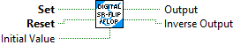

This VI implements a digital "time delay". The output is the input delayed by "Delay" seconds. If the "Delay" time does not exactly match the sample period, the boolean value prior to the delay time is returned.
Inputs:
- Input -- Boolean input value
- Delay Time -- Time (seconds) to delay the otuput value. If time delay is increaed, then the buffer is re-created. FALSE will be returned until the buffer has sufficient data to return a delayed value.
- Time -- Continously counting system time, Seconds. If not wired the FPGA time will be used.
Outputs:
- Output -- Boolean output value with delay applied
- IsPresent -- Set to TRUE if the buffer has enough data to return a delayed value.

This VI implements a digital "off delay". The output becomes TRUE when the input goes TRUE. The output remains TRUE for a specified time after the input goes FALSE.
Inputs:
- Input -- Boolean input value
- Delay -- Off delay time in seconds.
- Time -- Continously counting system time, Seconds. If not wired the FPGA time will be used.
Outputs:
- Output -- Boolean output value with the off delay applied
- Remain -- Time remaining for this value to be on, seconds. Value will be 0 to Delay input value.

This VI implements a digital "on delay". When input is zero, output is zero. When output is true, input goes true after the designated time delay. Once the delay counter has started, the time delay value cannot be changed.
Inputs:
- Input -- Boolean input value
- Delay -- On delay time in seconds.
- Time -- Continously counting system time, Seconds. If not wired the FPGA time will be used.
Outputs:
- Output -- Boolean output value with the on delay applied
- Remain -- Time remaining for this value to be off in, seconds. Value will be 0 to Delay input value.

This VI implements a digital "one shot". The output is true for a specific period of time after the input transitions from FALSE to TRUE.
Inputs:
- Input -- Boolean input to use for one shot output
- OneShot -- Length of one shot output in seconds.
- Time -- Current system time. If not wired, FPGA time is used.
Output:
- Output -- Boolean output one-shot
- Remain -- Number of seconds remaining in one-shot.

This VI implements a standard Set-Reset (SR) Flip Flop. A flip flop is sometimes called "digital memory" because when both inputs are off, it remembers the state of the last input.
Reset takes precedence over Set. The initial state is Reset.
Inputs:
- Set -- Boolean, when TRUE indicates the flip-flop should be SET.
- Reset -- Boolean, when TRUE indicates the flip-flop should be RESET. (Reset overrides set.)
- InitialValue -- Value of the flip-flop during the first execution. TRUE = SET, FALSE = RESET. (Defaul: False)
Output:
- Output -- Output state of the flip-flop
- Inverse Output -- Inverse (NOT) output of the flip-flop.